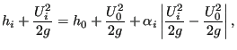
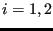
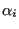
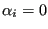
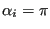

Next: In/Out Up: Fluid Section Types: Open Previous: Discontinuous slope Contents
This is not a channel element. Rather, the channel joint is modeled by using three standard straight channel elements, in two of which the mass flow is entering the joint (the “joining” elements) and in the remaining it is leaving the joint. Within each of the joining elements the fluid depth is not assumed to change. Therefore it is important that the length of all three elements is chosen sufficiently small. No other elements are allowed in a joint (so also no In/Out elements).
If a frontwater curve prevails in both the joining elements the frontwater curve with the highest depth is pursued downstream (also a frontwater curve) and the other curve either simply connected or connected through a jump. No energy loss is taken into account.
If a frontwater curve prevails in only one of the joining elements this curve is continued downstream (also a frontwater curve) and a backwater curve is calculated for the other joining element. No energy loss is taken into account.
If a backwater curve prevails in both the joining elements also the downstream element is characterized by a backwater curve. Here, the Bernoulli equation is assumed to contain a head loss in the following form [12]:
 |
(209) |
where     and the downstream channel, normalized by
and the downstream channel, normalized by
 . Consequently, it takes the value 0 for
. Consequently, it takes the value 0 for
 can be
calculated in each of the upstream channels. This allows for an update of
can be
calculated in each of the upstream channels. This allows for an update of
 . This procedure is continued until convergence is reached.
. This procedure is continued until convergence is reached.